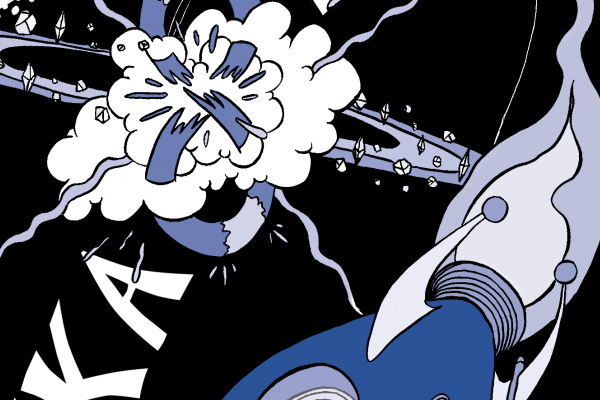
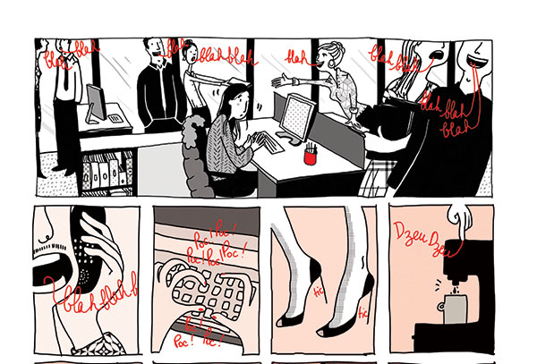
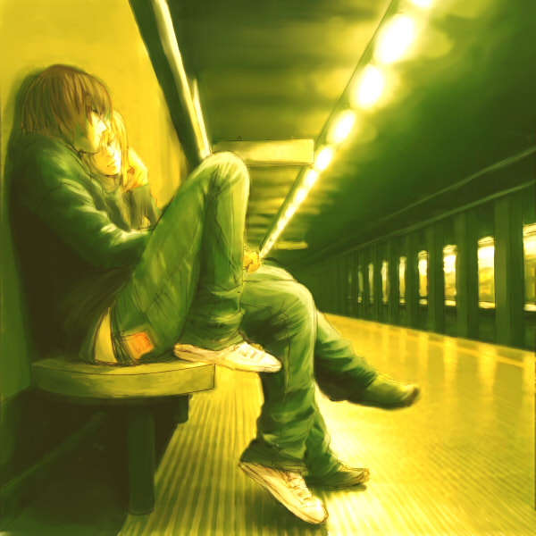
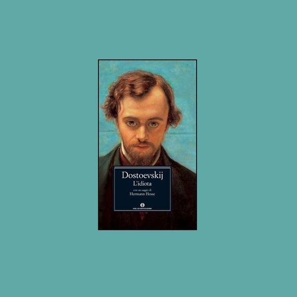
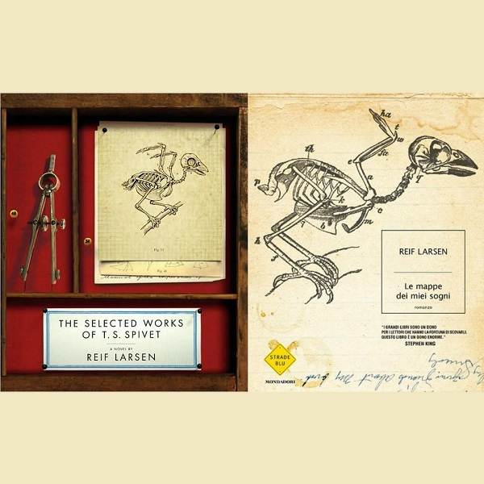
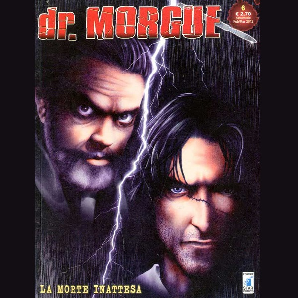

Personaggi della letteratura e dei fumetti con la Sindrome di Asperger
Romanzi e FumettiLa Sindrome di Asperger nella letteratura e nei fumetti
Nei personaggi della letteratura elencati di seguito possiamo trovare alcune delle caratteristiche tipiche della Sindrome di Asperger. Personaggi che mostrano la realtà con occhi diversi.
“Mi credono idiota, ma io sono intelligente, e loro non lo sospettano nemmeno”
L'Idiota - Fëdor Michajlovič Dostoevskij Scrittore



Il teorema del Licaone
Il teorema del licaone graphic novel scritta da due autori con la Sindrome di Asperger. L'avventura racconta di Thomas, ragazzo con la Sindrome di Asperger che vive la propria vita tra viaggi di fantasia e avventure nel mondo dei sogni.
Il libro si pone come una sorta di "manuale divertente" creato per chi ha è Asperger, su ciò che si deve fare e non fare per avere relazioni sociali stabili pur rimanendo se stessi.

Ted un tipo strano
La giovane autrice Emilie Gleason, racconta la vita di Ted tra tragicità e ironia. Un punto di vista della Sindrome di Asperger raccontato in 128 pagine ricche di colori e stravaganti trovate stilistiche.
Ted il protagonista, viene disegnato all'interno di un mondo inquieto, stravolto da emozioni troppo forti arrivando ad un epilogo sconfortante che ci lascia spiazzati, dopo aver vissuto le sue avventure come se fossimo all'interno di un ottovolante.

La differenza invisibile
La differenza invisibile, è una graphic novel scritta da Mademoiselle e Dachez diventata in pochi anni un bestseller vendutissimo in Francia. Edita da LSWR racconta la vita di una donna con la Sindrome di Asperger.
Marguerite a 27 anni scopre di essere Asperger, lei impiegata in una grande multinazionale che tenta di vivere una vita normale, arrivando al momento di affrontare i suoi problemi e scoprendo di non essere "fuori di testa". Comprendendo di avere semplicemente un modo differente di approcciarsi al mondo, ed iniziare una nuova vita.

Death Note
Fumetto manga scritto da Tsugumi Oba e illustrato da Takeshi Obata, racconta di Light Yagami che trova un misterioso quaderno nero e di Elle detective estremamente intelligente e stravagante
Probabilmente anche gli autori del fumetto hanno confermato che determinate caratteristiche del personaggio di Elle sono state ispirate dalla Sindrome di Asperger. La sua intelligenza straordinaria, il suo essere eccentrico, il suo non curarsi del vestiario e dei suoi numerosi comportamenti stravaganti.

L'idiota di Dostoevskij
Probabilmente è uno dei massimi capolavori della letteratura russa. L'opera scritta da Dostoevskij ha avuto adattamenti nel cinema, in teatro e televisivi.
Il personaggio principale viene avvicinato alla Sindrome di Asperger per via del suo essere impacciato, incapace di dire falsità sociali, del tutto privo di pregiudizi e in possesso di un pensiero assolutamente divergente.
Uomini che odiano le donne
Un giornalista di una piccola testata giornalistica ed una ragazza esperta di informatica, chiaramente con la Sindrome di Asperger, indagano sul caso di una donna scomparsa quaranta anni prima tra gli oscuri segreti di una ricca famiglia
Il libro fa parte della trilogia scritta da Stieg Larsson che hanno venduto milioni di copie in tutto il mondo

Gli Animali fantastici: dove trovarli
Protagonista è il magizoologo Newt Scamandro dove descrive settacinque specie di creature magiche.
Le caratteristiche del personaggio che lo avvicinano alla Sindrome di Asperger è il suo ristretto interesse, tenere lo sguardo basso e le sue problematiche relative alle interazioni sociali.
Sherlok Holmes
Personaggio letterario ideato da Arthur Conan Doyle, esordisce nel primo romanzo Uno studio in rosso dove viene descritto
La sua ossessione verso le informazioni, gli indizi. Le sue difficoltà nel memorizzare le informazioni che riguardano la sua vita, e la sua assoluta genialità lo fanno uno degli Asperger nel mondo letterario più famoso al mondo.
La solitudine dei numeri primi
Un successo straordinario per il primo romanzo di Paolo Giordano, dove ha ricevuoto numerosi premi tra cui il Premio Strega ed il Premio Campiello
Un libro entusiasmante dove racconta di Alice e Mattia, lei zoppa per via di un incidente sciistico e lui affetto dalla sindrome di Asperger.

Le mappe dei miei sogni
Il libro racconta di T.S. genio dodicenne che disegna mappe. Vive in un ranch del Montana con il padre e la madre. C'è stato anche l'adattamento cinematografico
T.S. cerca di dare un ordine alle cose tracciando su un taccuino mappe bellissime e meticolose. Mappe di tutto: del comportamento della famiglia, di animali, di piante, di posti, di cose

Dr Morgue
Storia di un coroner con la sindrome di Asperger, dove ha particolari problemi con la morte, dovuti dalla sua professione ma anche dalla sua spiccata genialità
La scelta dei suoi studi in Medicina Legale è dovuta alla morte della sua fidanzata morta in circostanze misteriose
Molto forte, incredibilmente vicino
Secondo romanzo dello scrittore Safran Foer dove affronta il tema degli attacci terroristici del 11 Settembre
Personaggio principale è Oskar con un carattere particolare, ha difficoltà a relazionarsi con gli altri e si rifugia nel suo mondo.